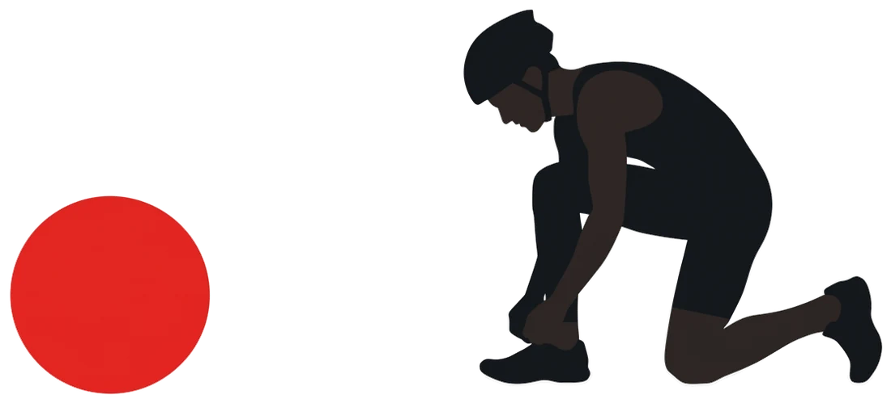
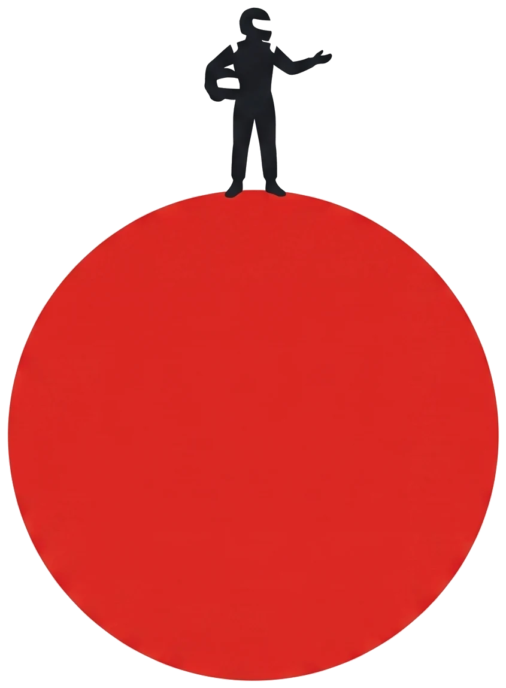
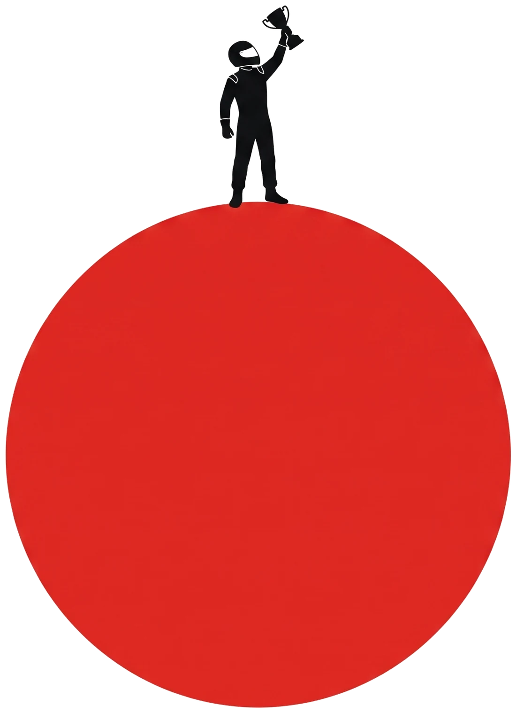
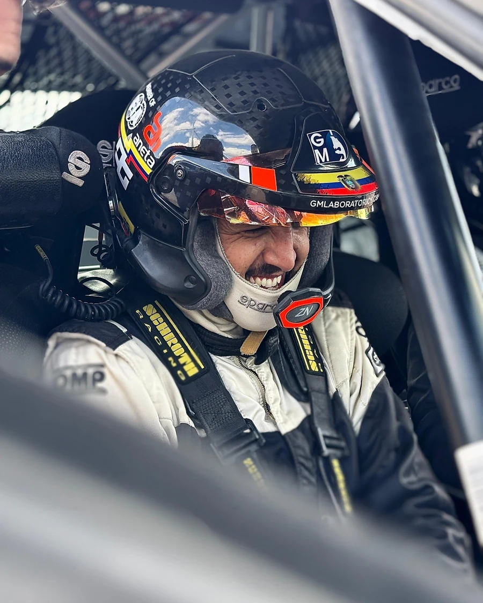
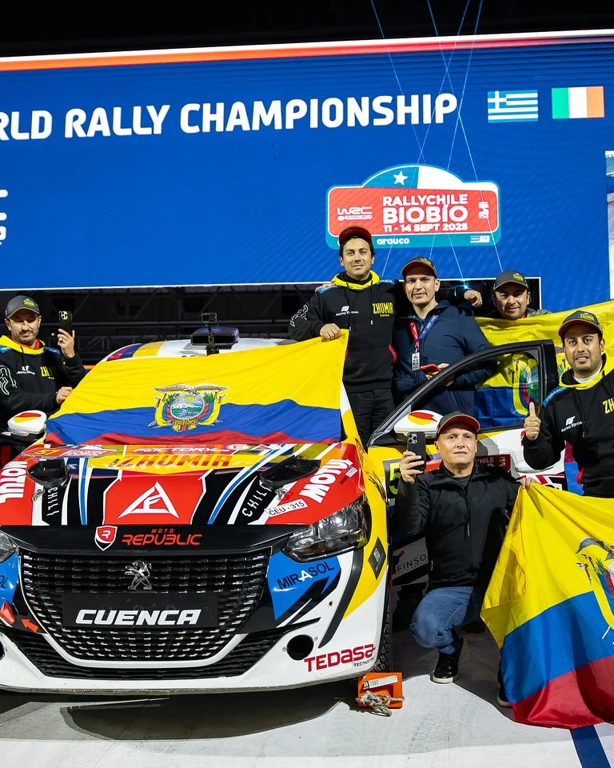
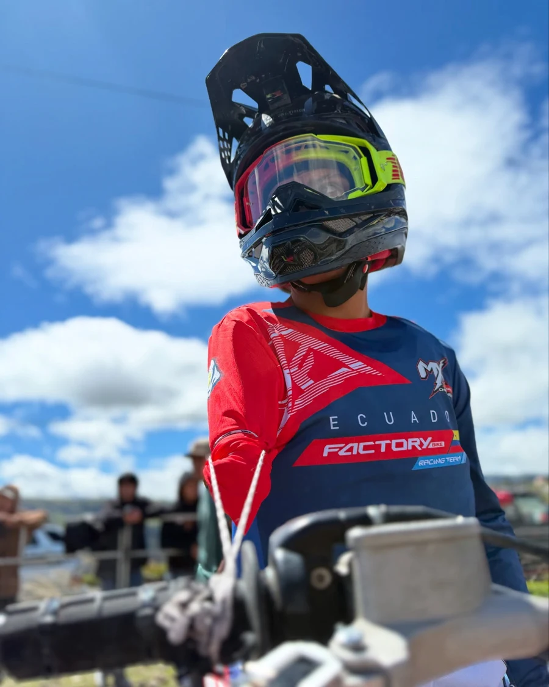

Inicio estratégico
Para quien todavía no tiene narrativa ni rutina de publicación.
Rango referencialDesde USD 260 al mes
- Narrativa y optimización de perfiles
- Calendario editorial mensual
- Piezas base de contenido
No vendemos planes cerrados. Diseñamos procesos según tu etapa, tu disciplina y tu presupuesto, empezando por lo mínimo viable para comunicar, construir marca y detectar oportunidades.

Etapa 01 · EmergenteAún no tienes identidad, rutina de contenido ni una forma clara de presentarte ante una marca.
Construir mi base »
Etapa 02 · PosicionadoCompites, comunicas y tienes auspiciantes, pero sin dossier, coordinación ni medición.
Prepararme para negociar »
Etapa 03 · Senior ProProyectos propios, alianzas de largo plazo y una marca que sobreviva al último día de competencia.
Diseñar mi siguiente etapa »Cada plan indica qué problema resuelve, qué incluye y qué se espera de ti. Duración mínima de 3 meses, una reunión de planificación al mes y dos rondas de revisión por pieza.
Para quien todavía no tiene narrativa ni rutina de publicación.
Para quien compite seguido y necesita continuidad y valor comercial.
Para atletas con exposición nacional o internacional y compromisos con marcas.
Procesos de 3 meses como mínimo, con una reunión de planificación al mes y dos rondas de revisión por pieza.
Si tu mix salta etapas, te lo vamos a decir: producción sin identidad ni dossier es el error más caro del mercado.
Cuatro pasos. Al final recibes tu categoría de perfil y la ruta sugerida, y te enviamos una cotización personalizada.
Elige solo lo que necesitas hoy. Escala el próximo trimestre.
Piloto ecuatoriano del GT Challenge de las Américas. Construimos su perfil comercial y la propuesta para auspiciantes 2027: espacios en el auto, experiencias VIP con marcas aliadas y contenido de temporada.
reproducciones de “¡Llegamos a la pista!”
consecutivos en la final del GT Challenge
Cada perfil es un proyecto: identidad, narrativa, calendario y una oferta que una marca puede activar y medir.
Dos años consecutivos en la final del GT Challenge de las Américas.
Ver rendimiento
CuencaMás de 16 años en el automovilismo y una nueva temporada a bordo del Renault Clio Rally 3.
Ver rendimiento
EcuadorIntegra a sus marcas de forma natural y habla a cámara con claridad.
Ver rendimiento
CañarCompite en motocross con un solo brazo. Su contenido llega mucho más lejos que su cuenta.
Ver rendimiento